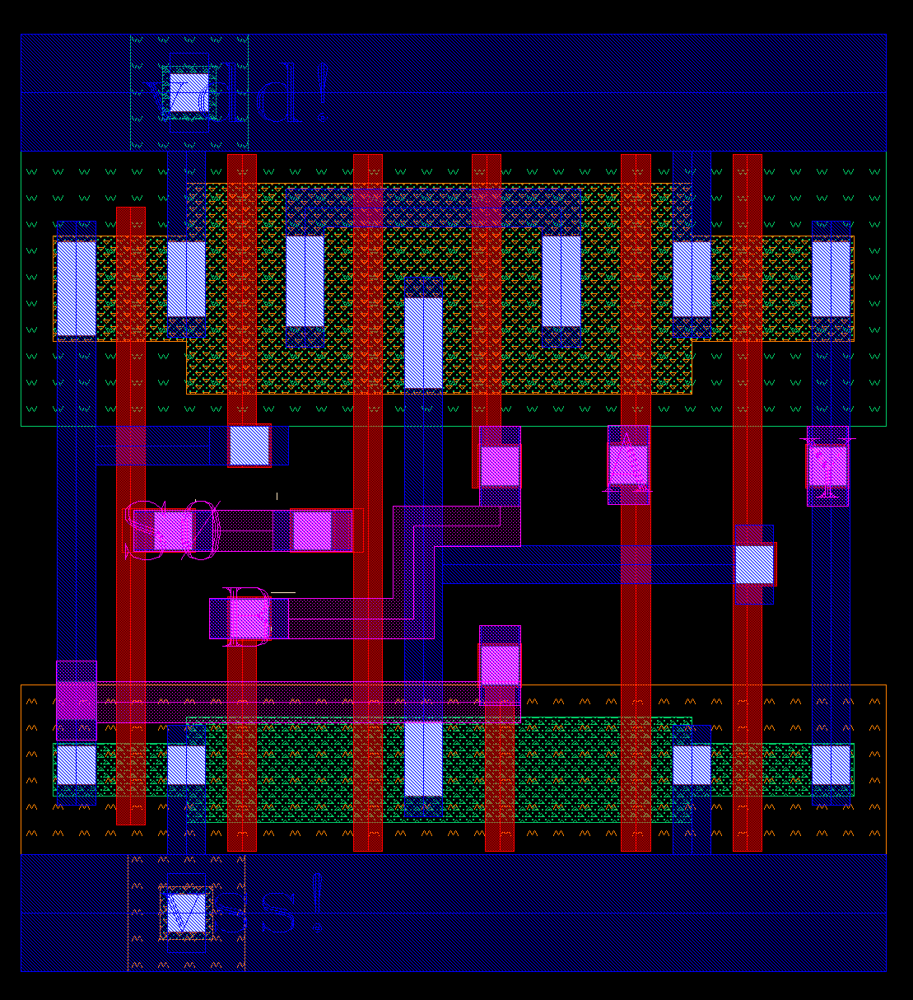
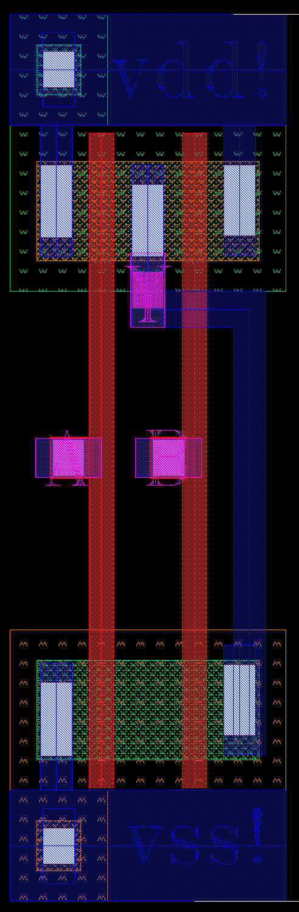
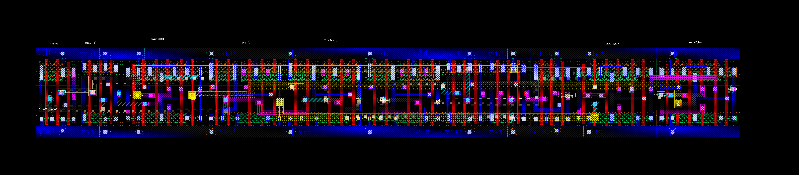
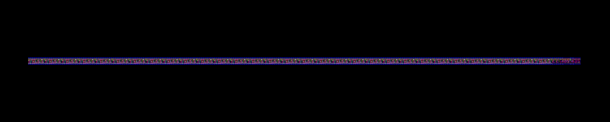
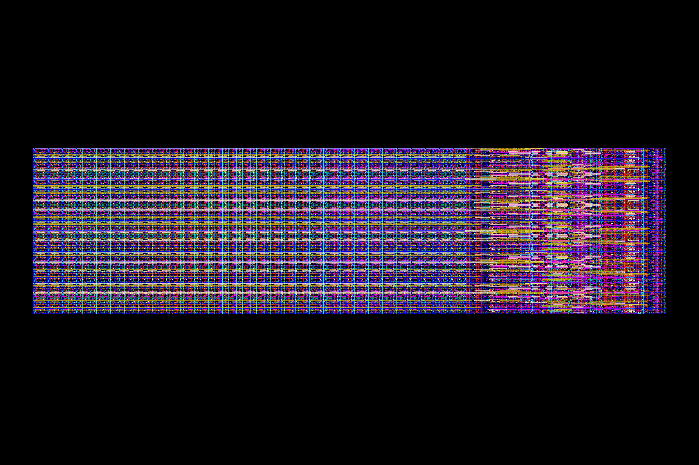
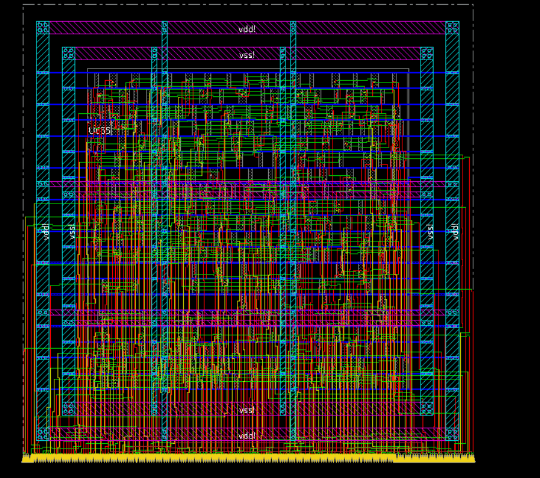
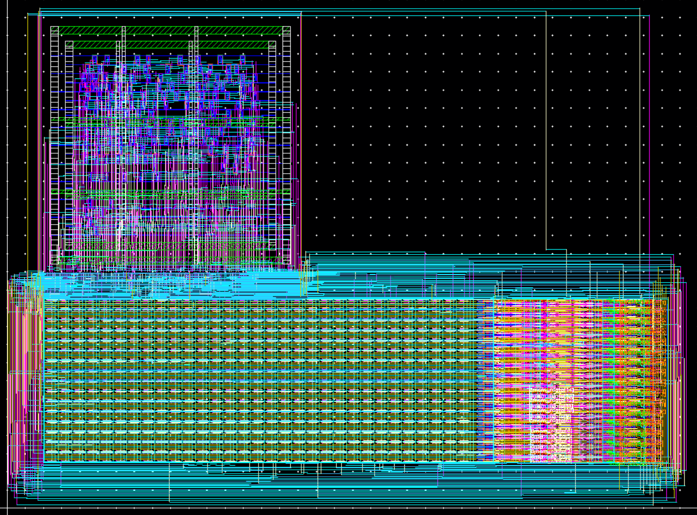
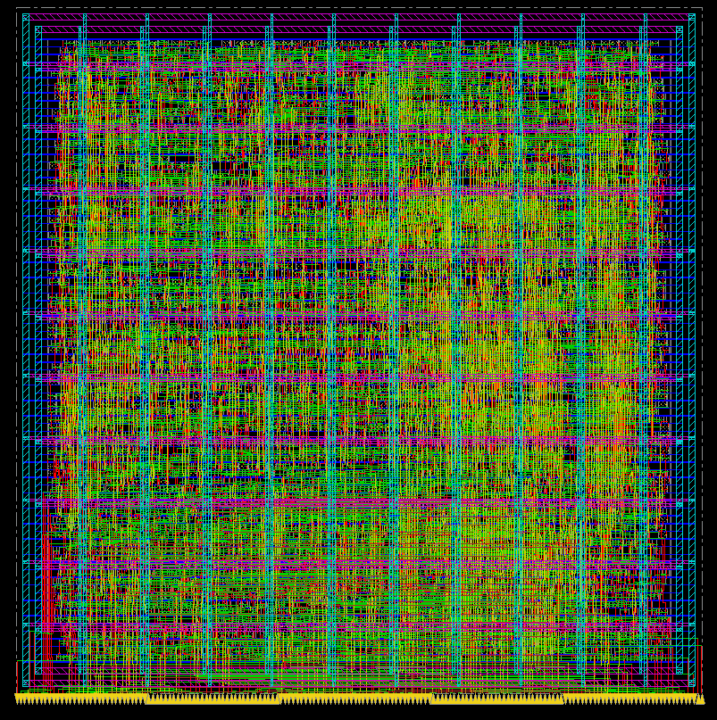

RV32I Bitsliced Datapath Layout
This is my RV32I bitsliced datapath layout that I designed over the course of UIUC's ECE 425. The first part of constructing the layout was designing a standard cell library that could be used to create larger components.


mux2 standard cell layout (left) and nand2 standard cell layout (right)
The complete standard cell library included and2, aoi21, buf, dff, latch, inv, mux2, nand2, nor2, oai21, or2, xnor2, and xor2.
Once these layouts were finished, the next phase was implementing the full RV32I datapath. Each piece of the bitsliced design was laid out manually, using SystemVerilog testbenches to ensure functionality.

Bitsliced alu layout

Bitsliced regfile layout
After the bitsliced design was finished and verified, the full datapath was laid out using 32 connected instances of the bitsliced design.

Complete RV32I datapath layout
After I finished my manual layout, I transitioned to automated place-and-route using Cadence Innovus and TCL scripting. By scripting the RTL-to-GDSII flow, I synthesized and routed the control unit logic, which was then imported back into Virtuoso and integrated with my manually designed datapath to complete the full-chip integration. I also automated the PnR of the entire CPU using my custom standard cell library.

Automated PnR layout of the control unit

Automated PnR layout of the control unit integrated with my custom datapath layout

Automated PnR layout of the entire RV32I CPU